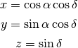

Converts a location on the unit sphere from right-ascension and declination to an x, y, z vector.
| Parameters : | ra, dec : scalars or 1-D arrays degrees : bool, optional
|
|---|---|
| Returns : | x, y, z : tuple of scalars or 1-D arrays of the same length |
Notes
Where right-ascension is α and declination is δ:
